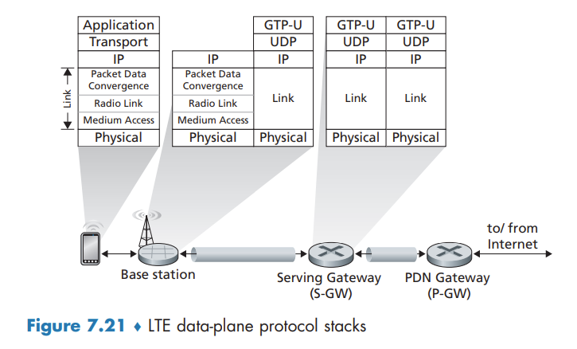
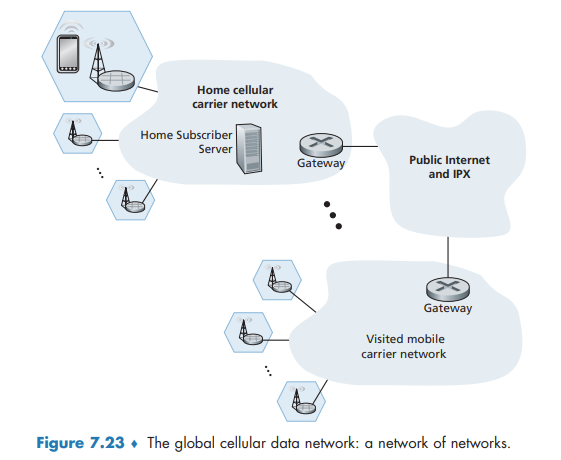

Cellular Networks 4G and 5G
Cellular Networks: 4G and 5G
The term cellular refers to the fact that the region covered by a cellular network is partitioned into a number of geographic coverage areas, known as cells. Each cell contains a base station that transmits signals to, and receives signals from, the mobile devices currently in its cell.
4G LTE Cellular Networks: Architecture and Elements
All network elements communicate with each other using the IP protocol.
How the various elements of a 4G LTE network interact with each other in both the data and the control planes:
- Mobile Device. implements the full 5-layer Internet protocol stack. is a network endpoint, with an IP address. also has a globally unique 64-bit identifier called the International Mobile Subscriber Identity (IMSI), which is stored on its SIM (Subscriber Identity Module) card.
- Base Station. The base station sits at the “edge” of the carrier’s network and is responsible for managing the wireless radio resources and the mobile devices with its coverage area. Nearby base stations also coordinate among themselves to manage the radio spectrum to minimize interference between cells.
- Home Subscriber Server (HSS). is a control-plane element. The HSS is a database, storing information about the mobile devices for which the HSS’s network is their home network.
- Serving Gateway (S-GW), Packet Data Network Gateway (P-GW), and other network routers. the Serving Gateway and the Packet Data Network Gateway are two routers that lie on the data path between the mobile device and the Internet. The PDN Gateway also provides NAT IP addresses to mobile devices and performs NAT functions. The PDN Gateway is the last LTE element that a datagram originating at a mobile device encounters before entering the larger Internet.
- Mobility Management Entity (MME). The MME is also a control-plane element, Along with the HSS, it plays an important role in authenticating a device wanting to connect into its network. It also sets up the tunnels on the data path from/to the device and the PDN Internet gateway router, and maintains information about an active mobile device’s cell location within the carrier’s cellular network.
- Cell location tracking. As the device moves between cells, the base stations will update the MME on the device’s location.
LTE Protocols Stacks
The 4G LTE architecture is an all-IP architecture. the new LTE protocols that we’ll focus on here are primarily at the link and physical layers, and in mobility management.
LTE divides the mobile device’s link layer into three sublayers:
- The Packet Data Convergence Protocol (PDCP) performs IP header/compression in order to decrease the number of bits sent over the wireless link, and encryption/decryption of the IP datagram using keys that were established via signaling messages between the LTE mobile device and the Mobility Management Entity (MME)
- The Radio Link Control (RLC) Protocol performs two important functions: (i) fragmenting (on the sending side) and reassembly (on the receiving) of IP datagrams that are too large to fit into the underlying link-layer frames, and (ii) link-layer reliable data transfer at the through the use of an ACK/NAK-based ARQ protocol.
- The Medium Access Control (MAC) layer performs transmission scheduling, that is, the requesting and use of the radio transmission slots. r also performs additional error detection/ correction functions, including the use of redundant bit transmission as a forward error-correction technique.

LTE Radio Access Network
LTE uses a combination of frequency division multiplexing and time division multiplexing on the downstream channel, known as orthogonal frequency division multiplexing (OFDM)
Additional LTE Functions: Network Attachment and Power Management
two additional important LTE functions: (i) the process with which a mobile device first attaches to the network and (ii) the techniques used by the mobile device, in conjunction with core network elements, to manage its power use.
Network Attachment
The process by which a mobile device attaches to the cellular carrier’s network divides broadly into three phases:
- Attachment to a Base Station.
- Mutual Authentication. the base station contacts the local MME to perform mutual authentication
- Mobile-device-to-PDN-gateway Data Path Configuration. The MME contacts the PDN gateway (which also provides a NAT address for the mobile device), the Serving gateway, and the base station to establish the two tunnels shown in Figure 7.21. Once this phase is complete, the mobile device is able to send/receive IP datagrams via the base station through these tunnels to and from the Internet!
Power Management: Sleep Modes
In 4G LTE, a sleeping mobile device can be in one of two different sleep states.
In the discontinuous reception state, the mobile device and the base station will schedule periodic times in advance at which the mobile device will wake up and actively monitor the channel for downstream transmissions.
the Idle state the mobile device’s radio wakes up and monitors the channel even less frequently. if the mobile device moves into a new cell in the carrier’s network while sleeping, it need not inform the base station with which it was previous associated. Thus, when waking up periodically from this deep sleep, the mobile device will need to re-establish an association with a (potentially new) base station in order to check for paging messages broadcast by the MME to base stations nearby the base station with which the mobile was last associated.
The Global Cellular Network: A Network of Networks
Figure 7.23 shows a user’s mobile smartphone connected via a 4G base station into its home network. The user’s home mobile network is operated by a cellular carrier such as Verizon, AT&T, T-Mobile, or Sprint in the United States

5G Cellular Networks
The ultimate wide-area data service would be one with ubiquitous gigabit connection speeds, extremely low latency, and unrestricted limitations on the number of users and devices that could be supported in any region.
It is predicted that 5G will provide roughly a 10x increase in peak bitrate, a 10x decrease in latency, and a 100x increase in traffic capacity over 4G
the physical layer (that is, wireless) aspects of 5G are not backward-compatible with 4G mobile communications systems such as LTE
FR2 frequencies are also known as millimeter wave frequencies. While millimeter wave frequencies allow for much faster data speeds, they come with two major drawbacks:
- much shorter range from base station to receivers.
- is highly susceptible to atmospheric interference. Nearby foliage and rain can cause problems for outdoor use.
5G is not one cohesive standard, but instead consists of three co-existing standards:
- eMBB (Enhanced Mobile Broadband). enables rich media applications
- URLLC (Ultra Reliable Low-Latency Communications). targeted towards applications that are highly latency-sensitive,
- mMTC (Massive Machine Type Communications). a narrowband access type for sensing, metering, and monitoring applications. reducing power requirements
5G and Millimeter Wave Frequencies
Many 5G innovations will be a direct result of working in the millimeter wave frequencies in the 24 GHz–52 GHz band. For example, these frequencies offer the potential of achieving 100x increase in capacity over 4G. To get some insight into this, capacity can be defined as the product of three terms
capacity = cell density x available spectrum x spectral efficiency
where cell density is in units of cells/km2, available spectrum is in units of Hertz, and spectral efficiency is a measure of how efficiently each base station can communicate with users and is in units of bps/Hz/cell.
For each of these three terms, the values will be larger for 5G than for 4G:
- more base stations are required, which in turn increases the cell density.
- 5G FR2 operates in a much larger frequency band, it has more available spectrum.
- Rather than broadcasting signals in all directions, each MIMO antenna employs beam forming and directs the signal at the user. MIMO technology allows a base station to send to 10–20 users at the same time in the same frequency band.
By increasing all three terms in the capacity equation, 5G is expected to provide a 100x increase in capacity in urban areas.
Small cell stations are needed to fill in coverage gaps between base stations and users. In a highly populous region, the distance between two small cells could vary from 10 to 100 meters.
5G Core Network
The 5G Core network is the data network that manages all of the 5G mobile voice, data and Internet connections.
5G core relays data traffic from end devices, authenticates devices, and manages device mobility. The 5G core also contains all of the network elements that we encountered - the mobile devices, the cells, the base stations, and the Mobility Management Entity (now divided into two sub-elements, as discussed below), the HSS, and the Serving and PDN gateways.
Some of the new 5G core network functions include:
- User-Plane Function (UPF). Control and user-plane separation allows packet processing to be distributed and pushed to the network edge.
- Access and Mobility Management Function (AMF). The 5G Core essentially decomposes the 4G Mobility Management Entity (MME) into two functional elements: AMF and SMF. The AMF receives all the connection and session information from end-user equipment but only handles connection and mobility management tasks.
- Session Management Function (SMF). Session management is handled by the Session Management Function (SMF). The SMF is responsible for interacting with the decoupled data plane. The SMF also performs IP address management and plays the role of DHCP.